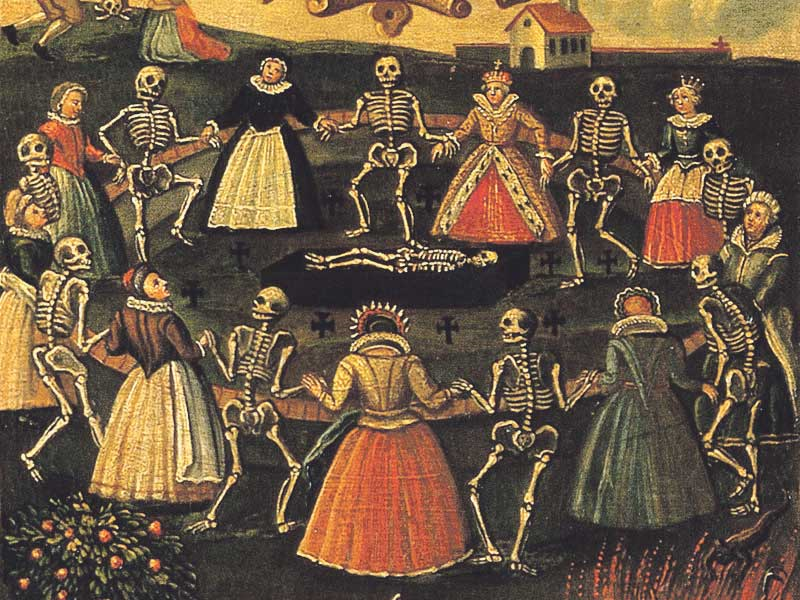
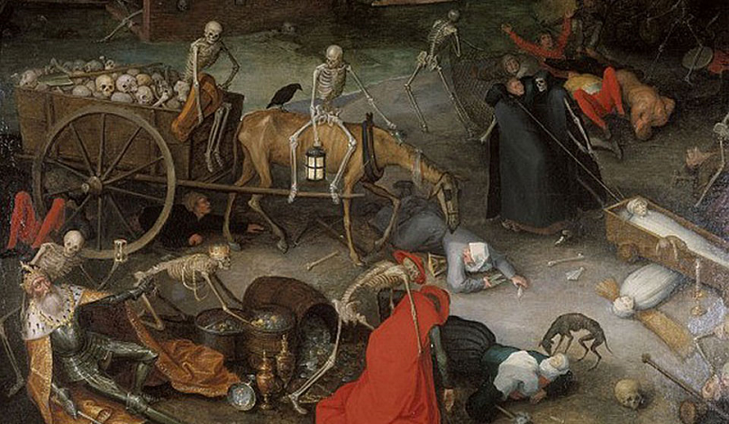

- Главная
- История
- Описание болезни
- Переносчики
- Целители
- защита
- Методы лечения
- Чумной форт
- Шарль де Лорм
- Врачи
- МЕНЮ
История появления болезни:
Чума и чёрная оспа имеют разные древние истории. Чума впервые была описана в 531 году в "юстиниановой чуме" в Сирии и Египте, а затем эпидемии, такие как "Чёрная смерть" в XIV (14 веке) веке, охватывали Европу и Азию. Оспа, предположительно, перешла к человеку от верблюдов и была описана в IV (4 веке) веке в Китае, а также зафиксирована на мумии фараона Рамзеса V (5 веке).

Пандемии чумы
- Первая пандемия (VI век): "Юстинианова чума" началась в 531 году в Сирии и Египте, распространившись по всей Римской империи и убив более 100 миллионов человек в Европе и Китае.
- Вторая пандемия (XIV век): "Чёрная смерть" зародилась в Азии и достигла Европы в 1346—1348 годах, унеся жизни 25 миллионов человек, или около трети населения континента.
- Последующие пандемии: Эпидемии чумы продолжались веками, включая "Чуму Святого Карла" (1575–1578 гг), эпидемии в Москве (1654–1655гг, 1770–1772гг) и Марселе (1720–1722гг).
- Третья пандемия (XIX век): Началась в XIX веке, затронув Индию, Южную Америку и другие части света, унеся более 85 миллионов жизней.
